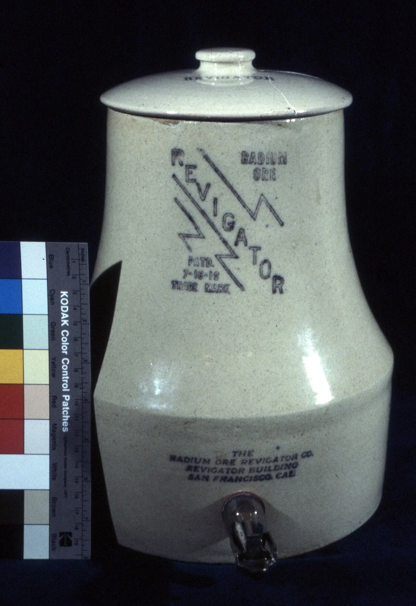
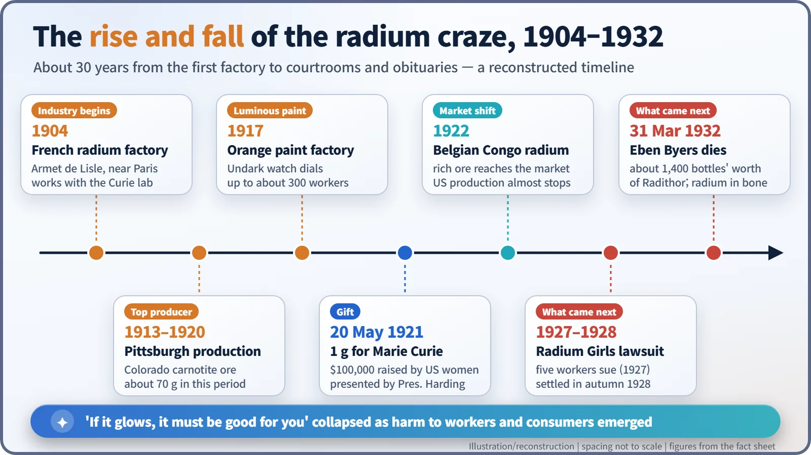
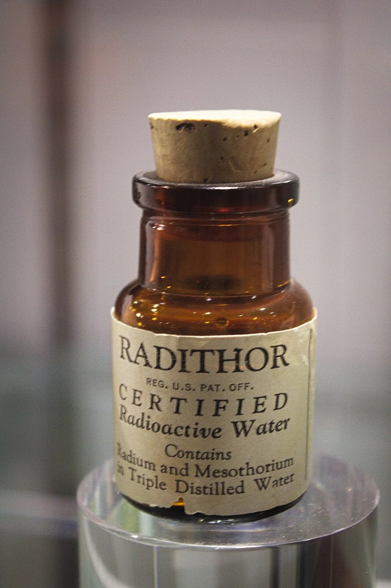
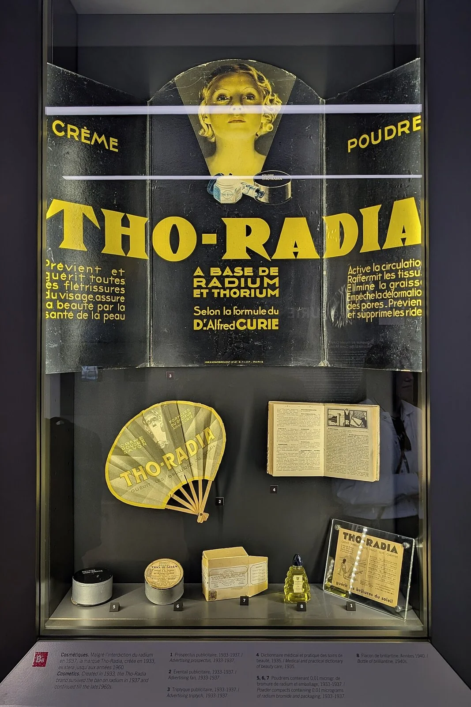
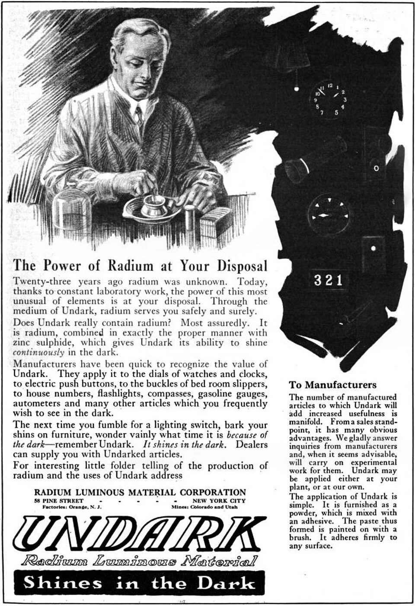
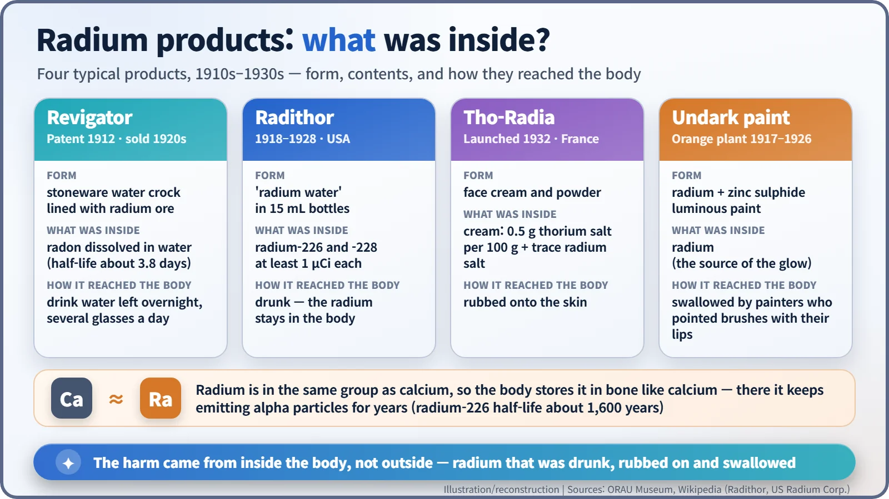

Nuclear History · 018
Glow Means Good? — The Radium Craze and the Rise and Fall of Radium Products
Radium glowed, cost a fortune and was sold as a tonic, until what it did inside the body came to light.
In the early twentieth century radium, the glowing element discovered by the Curies, became both the world's most expensive substance and a fashionable health product. People drank radon water from ore-lined crocks, bought bottled "radium water" and painted watch dials with radium paint, until harm to dial painters in the 1920s and the death of Eben Byers in 1932 showed what radium does inside the body.
A crock of "living water"
America, 1929. In the corner of a kitchen stands a plain stoneware water crock called the Revigator. It cost $29.50, and the instructions were simple: fill it with water at night, then drink several glasses a day. The inside was lined with radium-bearing ore, and the selling point was that the water soaked up "radioactivity" overnight. Several hundred thousand of these crocks were sold. Why would anyone deliberately drink radioactivity? [2]

The world's most expensive glow
It started with radium, the element Marie and Pierre Curie discovered in 1898. Newspapers and cheap fiction portrayed this metal that glowed on its own in the dark as a magical substance that could cure anything. When doctors began treating cancer with radium, the idea that "radium equals health" only grew stronger. [1]
From around 1903, people learned that the water of many famous health springs was radioactive. The cause was radon, a gas produced by radium in the ground and dissolved in the water. A popular theory claimed that radioactivity was the real secret of a spa's healing power. But radon has a half-life of only about 3.8 days, so it could not be bottled and sold for long. That is where home devices like the Revigator came in: they promised to make "radon water" fresh every night. [2]
From the lab to the factory
The first person to turn radium into a business was the French industrialist Émile Armet de Lisle (1853–1928). In 1904 he set up a factory at Nogent-sur-Marne, just outside Paris, worked closely with the Curie laboratory (some of its assistants became his first technicians), and supplied radium to the medical profession. [1]
In the 1910s the United States took the lead. Carnotite ore from Colorado and Utah was refined in the Pittsburgh area, and between 1913 and 1920 Pittsburgh alone produced about 70 g of radium. On 20 May 1921, at the White House, President Warren G. Harding presented Marie Curie with one gram of radium bought with money raised by American women. The contract price for that single gram was $100,000. America's dominance did not last: in 1922 rich ore from the Belgian Congo reached the market, and US production almost stopped. [4] [5]

Drink it, rub it on, paint with it
Because radium was so costly, a tiny trace was enough to put "contains radium" on the label. From 1918, Bailey Radium Laboratories in New Jersey sold Radithor: water in 15 mL bottles, each containing at least 1 µCi (one microcurie, or 37,000 decays per second) of both radium-226 and radium-228. Its owner, William J. A. Bailey, was not a doctor, and the product reportedly sold some 400,000 bottles between 1925 and 1930. In 1932 a French cosmetics brand, Tho-Radia, launched creams and powders containing thorium and a trace of radium. The "Dr Alfred Curie" on the packaging had no connection with the famous Curie family. [3] [6]


The most widespread use, however, was luminous paint. Undark, a mix of radium and zinc sulphide, made watch hands and instrument dials glow all night. A 1921 magazine advertisement promised "The Power of Radium at Your Disposal". [7]

Why was it dangerous? The problem was inside the body
Outside the body, radium's alpha particles are stopped by the outer layer of skin. The danger begins once radium gets inside. Radium sits in the same column of the periodic table as calcium, so the body mistakes it for calcium and stores it in bone, the very tissue that is meant to last a lifetime. Radium-226 has a half-life of about 1,600 years. Once lodged in bone, it keeps firing alpha particles into neighbouring cells, effectively for the rest of a person's life.

What came next
Workers paid first. At a luminous-paint factory in Orange, New Jersey, young women painted dials and shaped their brushes to a fine point with their lips. From the early 1920s several of them died of jaw-bone decay, anaemia and bone cancer. In 1925 the medical examiner Harrison Martland identified radium as the cause. In 1927 five workers sued, and in the autumn of 1928 they won a settlement. Their cases, later remembered as the story of the "Radium Girls", became part of the evidence for setting limits on how much radium a body can safely contain. [7] [8]
For consumers, the symbol was Eben Byers (1880–1932), a Pittsburgh steel industrialist and the 1906 US Amateur golf champion. After injuring his arm in 1927 he began drinking Radithor on a doctor's advice, and by October 1930 he had taken about 1,400 bottles' worth. In 1931 the Federal Trade Commission, investigating Radithor, had to take his statement at home because he was too ill to travel; it went on to order Bailey's business to stop claiming the water was therapeutic and harmless. Byers lost most of his jaw and died on 31 March 1932. His death greatly strengthened public demand for controls on radioactive patent medicines. A line often quoted as if it were a 1932 headline, "The Radium Water Worked Fine Until His Jaw Came Off", is actually the title of a 1990 Wall Street Journal retrospective. [9]
The lessons are clear. Exaggerated advertising that borrows the authority of science can do real harm to real people, and the risk from radiation depends on how much is received and by what route. The bitter experience of the radium craze fed directly into the first standards for radiation protection.